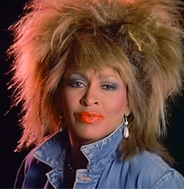

Festival de l'Au-delà
le seul festival où tous les artistes se produiront un jour
Tina Turner

14 septembre
1983 - 23
juillet 2011
Ses titres
- 2003: Stronger than me
- 2004: Take the box
- 2004: In my bed / You sent me flying
- 2004: Fuck me pumps / Help yourself
- 2006: Rehab
- 2007: You know I'm not good
- 2007: Back to black
- 2007: Tears dry on their own
Avis du festival
En deux mots
Ses récompenses
Tina Turner c'était
Pour en savoir plus